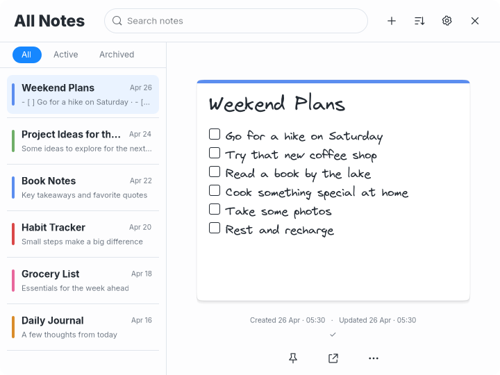
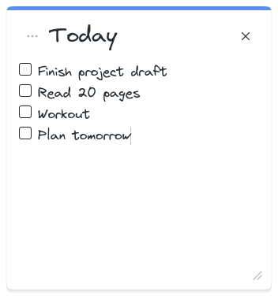

Latest requested fixes: corners, spacing, Appearance row and working canvas patterns. Earlier review captures remain below.
Latest requested correction: one animated Appearance panel, removed back arrow and dimmed filters. Earlier captures remain below.
Minimal Light visual review
Latest correction: taller filter band and consistent first-row spacing, verified in Dark first and applied to all themes. This page preserves the preceding theme review.
Playful and Minimal Light are approved. Minimal Dark is now authorized and under review. Paper and approved themes are preserved. No commit or push.
Fresh actual GTK renders with disposable notes. Click any image for its original pixels. Verification and remaining differences.
Reference content with the global Virgil choice
 Original Minimal Light reference
Original Minimal Light reference
Actual GTK, global Virgil choice, 720×540All six Weekend Plans items are present. The note's blue top strip follows its tag. Minimal sidebar markers remain bars under the agreed design, despite dots in the mock.
Default Inter, before and after
 Before this Light pass, default Inter, 720×540
Before this Light pass, default Inter, 720×540 Current default Inter, 720×540. All six items visible.
Current default Inter, 720×540. All six items visible.The title is larger than the body, checkboxes are compact, selected fills have separate straight dividers, and the sidebar edge continues through flat 24px filters. The default font remains Inter.
Selection and long titles
Default and minimum notes with tools
Opening tools preserves 352×376 and 300×280 note dimensions. Routine save status stays in All Notes.
Individual reference content
 Original Today reference
Original Today reference
Actual Today content, global Virgil, 352×376Provisional typography
| Text | Small | Medium | Large |
|---|
| Title | 25px | 28px | 31px |
| Body | 14px | 17px | 20px |
Inter by default. Virgil and JetBrains Mono remain global Settings choices. Regular is 400, Bold is 700. Chrome is Inter with 14px sidebar titles, 11px snippets, 10px dates and a 23px/800 All Notes heading. Dark typography remains unchanged.
Remaining differences
The mock uses handwriting; default Minimal remains Inter. Supplied Virgil differs from the mock. The compact body leaves more space, especially in Today. Long content wraps and scrolls at minimum size, and long titles scroll horizontally inside their entry. No automatic underline or decorative note-face pin was added. Tools use the existing compact controls with sixteen colors.
Paper, approved Playful and untouched Dark regression captures
Light-only branches guard typography, paragraph spacing and drawing; CSS excludes Dark. The initial comparison was pixel-identical for all Paper/Playful captures and Dark main/tools. Dark's note differed in a small scrollbar-frame region. The final saved Paper main also has a thin search-caret variation. Approved Playful remains pixel-identical in all three final captures.
Paper
Before note · After note · Before tools · After tools
Approved Playful
 Before, 720×540
Before, 720×540 After, 720×540
After, 720×540Before note · After note · Before tools · After tools
Minimal Dark, untouched
Before note · After note · Before tools · After tools
Verification
Formatting, 22 non-display tests, strict Clippy, release build and diff checks passed. The existing GTK shared-editor regression passed separately. Disposable GTK checks verify shared title/body sizes, S/M/L, weight, sixteen colors with persistence, three global fonts, exact preview dimensions and tools preserving note size.
Hover is a GTK state preview. Native pointer resizing, Escape, timers and edge checks were not repeated. No desktop configuration changed. Minimal Light is approved. Minimal Dark is now under review.